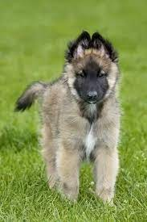
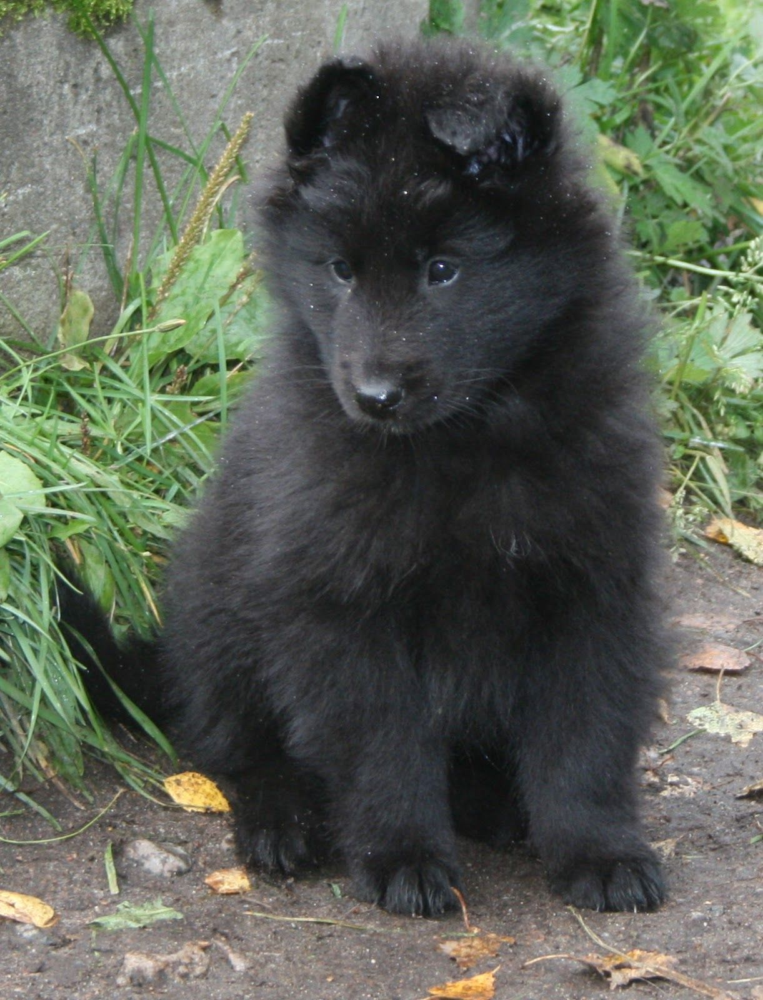
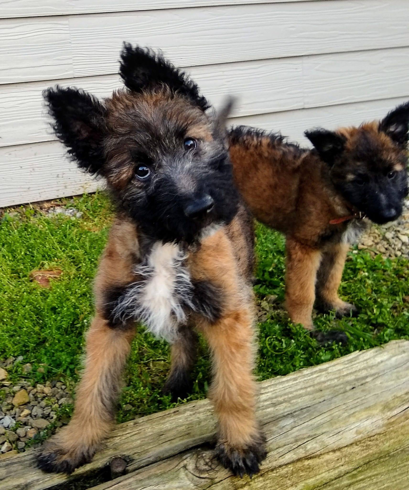

Four Varieties
The Belgian Sheepdog, more commonly known as the Belgian Shepherd or the Dutch Shepherd, is a single breed with four different types. The American Kennel Club recognizes three of the four varieties as separate breeds, while the United Kennel Club recognizes all four as individual varieties of one breed.
 |
 |  |  |
|---|